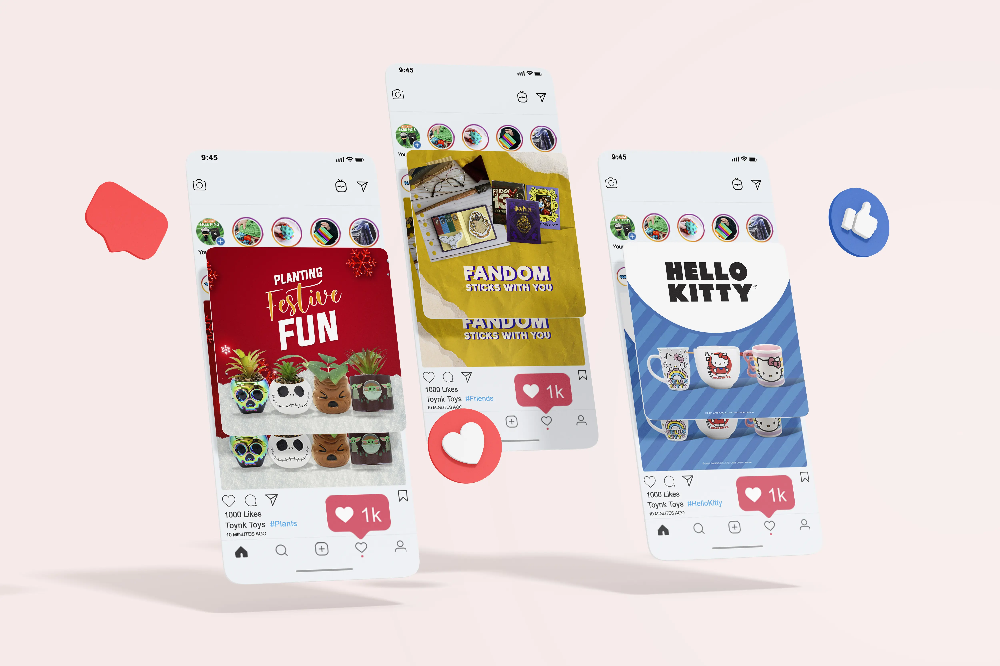

See More
This is an editorial illustration inspired by my favorite artist Jing Wei. I was tasked to replicate a similar style to an artist of my choice. In the process, I have to read an article, illustrate a drawing that applies to that article and putting it into a magazine layout. It was a fun process because I get to explore and learn about the article, play with different typefaces, and choose colors to go with the theme.
See More